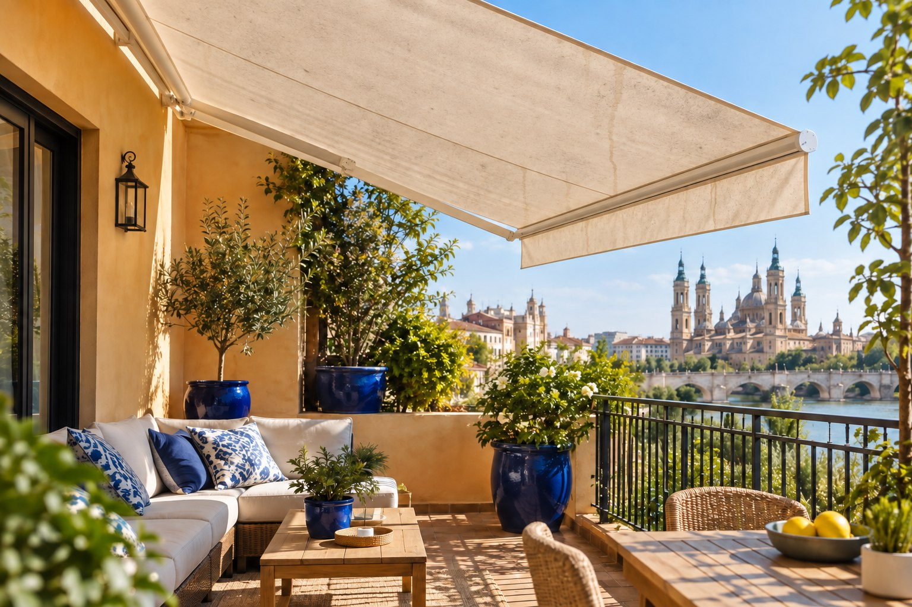
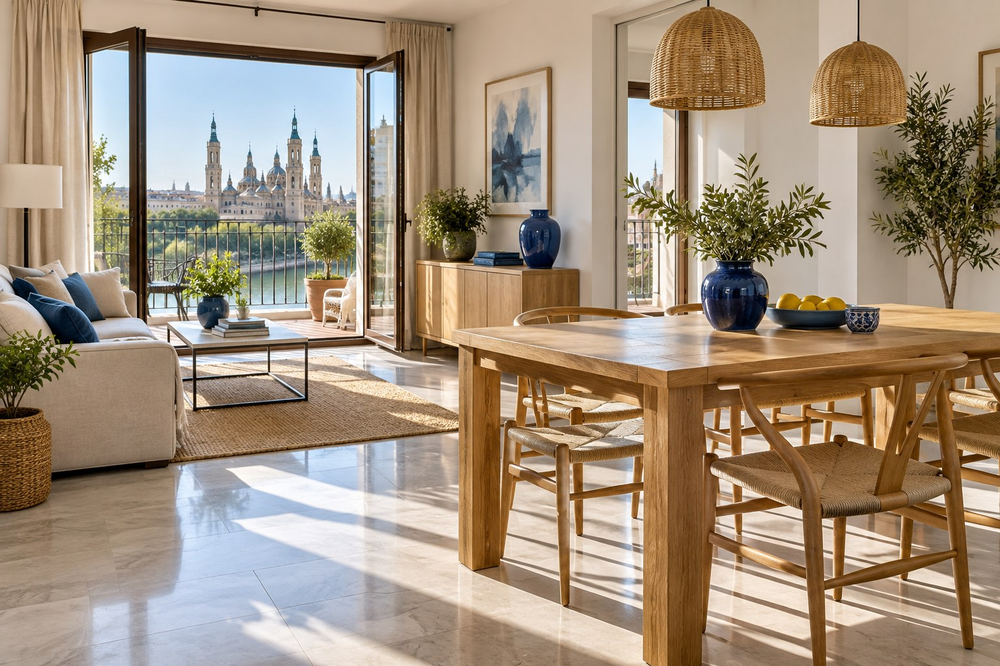

Toldos de viviendas, terrazas y locales
Comparte cómo se utiliza el espacio y qué zonas son prioritarias. Una descripción sencilla ayuda a orientar la consulta.
 Ejemplo visual ilustrativo
Ejemplo visual ilustrativoEl toldo protege del sol y permanece expuesto al polvo y a la intemperie. Una consulta con fotos permite valorar el tipo de estructura y el estado visible antes de hablar del trabajo.
El servicio y su alcance se concretan al conversar sobre el espacio. Coméntanos qué zonas te preocupan y qué materiales necesitan especial cuidado.
Comparte cómo se utiliza el espacio y qué zonas son prioritarias. Una descripción sencilla ayuda a orientar la consulta.
Ubicación en Zaragoza, tipo de espacio, dimensiones aproximadas y fotografías cuando ayuden a mostrar el estado o el acceso.
Sigue las indicaciones del fabricante y evita frotar en seco o usar productos agresivos. Si está húmedo, deja que se seque antes de recogerlo cuando sea posible.
Arrastra el control, usa las flechas del teclado o toca la imagen para comparar. Escena creada con fines ilustrativos.


Imágenes generadas para esta demostración. No son fotografías de trabajos realizados por Limpiezas Lumis.


Si tienes dudas sobre tu espacio, escríbenos y cuéntanos lo que necesitas.
El alcance se concreta según el espacio y tus prioridades. Escríbenos para describirlo y consultar los detalles.
¿Qué conviene enviar? Una foto general del toldo, otra del tejido y una referencia aproximada de sus medidas y ubicación.
Sigue las indicaciones del fabricante y evita frotar en seco o usar productos agresivos. Si está húmedo, deja que se seque antes de recogerlo cuando sea posible.